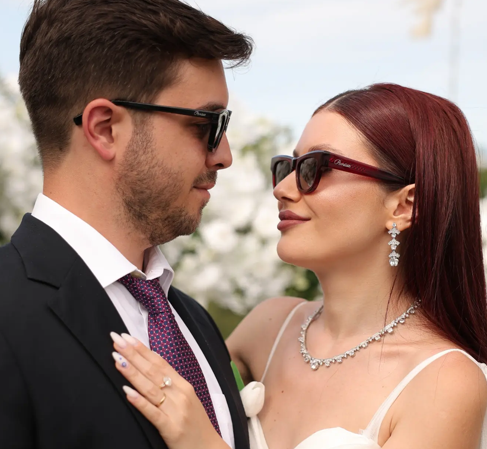

Gafas para el día
de tu boda
Porque en las fotos de boda los detalles no se olvidan.

Las personas que llevan gafas y se casan se enfrentan a una decisión que nadie les advirtió con suficiente tiempo. En el mejor de los casos, llevan sus gafas de diario — las mismas que usan para ir al trabajo, para conducir, para hacer la compra. En el peor, deciden ponerse lentillas ese día y aguantan doce horas con los ojos secos y la concentración en otra cosa, porque no quieren salir en todas las fotos con montura. Y hay una tercera opción que tampoco termina bien: comprar unas gafas a última hora sin haberlas elegido con calma, sin haberlas ajustado bien, y que ese día se muevan, aprieten o simplemente no queden como esperaban.
En Panisse hemos diseñado una consulta específica para esto. No es una revisión visual ordinaria ni un proceso de venta acelerado. Es una sesión pensada para que el resultado — la montura que lleves el día de tu boda — tenga el mismo nivel de atención que el vestido, el traje o el arreglo floral.
El problema no afecta solo a quien se casa. En una boda hay decenas de personas con gafas que también aparecen en todas las fotos: la madre del novio que lleva los mismos progresivos desde hace años, el padrino que tiene las varillas algo dobladas de tanto uso, la madrina que siempre ha querido renovar pero no encontraba el momento. El día de una boda es uno de esos momentos en que las gafas se ven. Y se notan.
Por eso la consulta Panisse Boda está abierta no solo para los novios, sino para cualquier persona que forme parte de la celebración y quiera que sus gafas estén realmente a la altura del día. La diferencia entre unas gafas correctas y unas gafas elegidas con criterio para ese momento específico es visible. Y en una fotografía que dura décadas, merece la pena tomarse el tiempo.
Lo que más importa
El detalle que más
se nota en las fotos
Las fotografías de boda tienen dos características que no tienen las del día a día: el flash del fotógrafo y la luz exterior intensa. Ambas hacen exactamente lo mismo sobre unas lentes sin tratamiento antireflectante correcto: generan un reflejo blanco que cubre los ojos, hace que las gafas parezcan más grandes de lo que son, y distrae la atención del rostro hacia la montura. El resultado es que en las fotos las gafas molestan visualmente, aunque en persona queden perfectamente.
Un antireflectante estándar reduce el reflejo pero no lo elimina. Los tratamientos premium — como ZEISS DuraVision Platinum — lo eliminan por completo. La diferencia en fotografía es inmediata: con un antireflectante de calidad, las lentes prácticamente desaparecen en la imagen. Se ve el ojo, se ve la expresión, y las gafas pasan a ser un accesorio elegante en lugar de un elemento que compite con la cara.
Esta es la primera recomendación que hacemos en cualquier consulta de boda: antes de elegir la montura, elegir el tratamiento de lente adecuado. Porque puedes tener la montura más bonita del catálogo, pero si las lentes devuelven reflejos en las fotos, ese detalle se verá en cada imagen durante décadas. En Panisse montamos exclusivamente lentes ZEISS con tratamientos DuraVision. Para una boda, recomendamos DuraVision Platinum UV como mínimo — el tratamiento que garantiza que tus ojos sean lo primero que se vea en cada fotografía, no el destello de las lentes.
Cómo funciona
La sesión de gafas
para tu boda
Consulta inicial
Analizamos el estilo de la boda, el vestido o traje previsto, el tipo de ceremonia y la luz esperada — interior, exterior, noche o todo junto. Con esa información orientamos la búsqueda desde el primer momento.
Selección de montura
Elegimos juntos la montura que funcione para ese día: formas, materiales y colores según el look. Probamos distintas opciones con calma, sin prisa. Si traes referencias del vestido o del estilo de la boda, mucho mejor.
Lentes a medida
Con tu graduación exacta y el tratamiento antireflectante premium adecuado. Si necesitas actualizar la graduación, realizamos el estudio visual antes de prescribir. Las lentes se fabrican con los mismos estándares ZEISS que cualquier par de gafas de Panisse.
Ajuste perfecto
Que no se muevan durante el baile, que no aprieten en las sienes después de doce horas, que el puente no deje marca. El ajuste es parte de la consulta, no un servicio adicional.
Revisita si hace falta
Si el día antes de la boda algo no está del todo bien — una varilla que roza, un puente que ha perdido tensión — puedes venir a un ajuste de cortesía sin cita previa en horario de apertura.
Para toda la celebración
No solo
para la novia
La novia
La protagonista de todas las fotos. Las gafas deben estar en armonía con el vestido, el peinado y el maquillaje. Una montura demasiado llamativa compite; una demasiado discreta desaparece. Encontrar el equilibrio es el trabajo de la consulta.
El novio
El gran olvidado de estas conversaciones. Un traje bien elegido merece una montura a la altura. Muchos novios llegan a su boda con unas gafas que compraron hace cuatro años sin ningún criterio especial. Con una sola visita eso cambia.
Padrinos y madrinas
También están en todas las fotos, de pie junto a los novios durante la ceremonia, en el reportaje, en el baile. Si vas a ser padrino o madrina y llevas gafas, este es el momento de renovarlas o ajustarlas correctamente.
Padres de los novios
Quizás sea el momento de renovar esas progresivas que llevan tiempo pidiendo atención, o de cambiar una montura que ya no representa bien a quien la lleva. Las bodas son uno de esos días en que la familia entera sale fotografiada al mismo tiempo.
Un contexto concreto
Bodas en Galicia: luz,
exteriores y el reto del tiempo
Galicia tiene una luz particular. Los pazos, los jardines, las iglesias románicas — son espacios con luz cambiante, a veces muy intensa en exterior y con sombras abruptas en interior. Las bodas gallegas tienen además una duración generosa: cóctel en el jardín, celebración en el comedor, sobremesa hasta la madrugada. Cuatro o cinco cambios de luz en el mismo día, con el fotógrafo activo en todos ellos.
Hay dos errores frecuentes que encontramos en este contexto. El primero: llevar lentes fotocromáticas. Las lentes fotocromáticas se oscurecen en exterior y tardan varios minutos en aclararse al entrar. En las fotos al aire libre, los ojos pueden quedar oscurecidos; en las de interior, las lentes pueden seguir activas durante un rato. Para una boda con desplazamientos entre espacios, no son la solución más predecible.
El segundo error: no preocuparse por los reflejos hasta ver las fotos. La luz lateral de los pazos y jardines gallegos es especialmente traicionera para las lentes sin antireflectante premium. Entra de costado, rebota en las lentes y genera un destello que el fotógrafo no siempre puede controlar en el encuadre.
Lo que funciona para una boda en Galicia: montura ligera que aguante bien durante doce horas, lentes con antireflectante DuraVision de máxima categoría, y una graduación verificada en las semanas anteriores. Simple, pero hace toda la diferencia cuando ves las imágenes.
Lo que nos preguntan
Preguntas
frecuentes
¿Con cuánta antelación debo venir antes de la boda?
Lo ideal es venir entre 6 y 8 semanas antes de la fecha. Ese margen nos permite fabricar las lentes con la calidad adecuada, hacer las pruebas necesarias y tener tiempo para cualquier ajuste si algo no termina de quedar perfecto. No recomendamos dejarlo para la semana de la boda — el proceso no se puede acelerar sin comprometer el resultado.
¿Puedo llevar lentillas el día de la boda?
Es posible. Pero muchas personas que usan lentillas habitualmente se quejan de sequedad e incomodidad en días largos, emocionalmente intensos y con mucho movimiento. Si normalmente llevas gafas y te planteas ponerte lentillas para un día de doce horas con brillo, flashes y lágrimas en algún momento, puede que ese no sea el día para experimentar. La consulta te ayuda a encontrar unas gafas con las que te sientas tan cómodo o cómoda que no eches de menos las lentillas.
¿Qué tipo de montura funciona mejor para las fotos?
No hay una respuesta única porque depende mucho del estilo de la boda y de la persona que las lleva. Dicho esto, las monturas finas y discretas tienden a fotografiarse bien porque no compiten con el rostro. Las de acetato grueso también pueden funcionar si el estilo de la boda es más editorial o con personalidad. Lo que sí marcará la diferencia en todos los casos es el tratamiento de lente: un antireflectante premium hace más por el resultado fotográfico que cualquier elección de montura. Lo vemos contigo en la consulta con calma.
¿Hacéis esto también para invitados?
Sí. Si eres invitado, padrino, madrina o padre o madre de los novios y quieres que tus gafas estén a la altura del día, la sesión funciona exactamente igual. No hace falta ser el protagonista de la boda para querer estar bien en las fotos. Muchas de las consultas que hacemos en los meses anteriores a una boda son precisamente de familia y personas cercanas a la pareja.
¿Hay que pedir cita?
Sí. Para la consulta de boda pedimos cita previa para poder dedicarte el tiempo que merece sin interrupciones. Puedes escribirnos directamente por WhatsApp con la fecha de tu boda y te proponemos un horario, o usar el formulario de cita de nuestra web. Normalmente tenemos disponibilidad en menos de una semana.
Reserva tu consulta
de boda
Escríbenos con la fecha de tu boda y te proponemos una cita. Sin prisas, sin lista de espera.